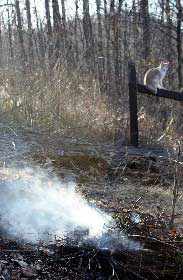

Last year, I committed one of the great sins of gardening: I let weeds go to seed. Cleaning up in fall, I faced down a ton of seed-bearing foxtail, burdock and crabgrass. Sure, I could compost it hot to steam the weed seeds to death, but instead I decided to try something different. I dug a ditch, added the weeds and lots of woody prunings, and burned it into biochar, thus practicing a “new” soil-building technique that’s at least 3,000 years old.
What’s biochar? Basically, it’s organic matter that is burned slowly, with a restricted flow of oxygen, and then the fire is stopped when the material reaches the charcoal stage. Unlike tiny tidbits of ash, coarse lumps of charcoal are full of crevices and holes, which help them serve as life rafts to soil microorganisms. The carbon compounds in charcoal form loose chemical bonds with soluble plant nutrients so they are not as readily washed away by rain and irrigation. Biochar alone added to poor soil has little benefit to plants, but when used in combination with compost and organic fertilizers, it can dramatically improve plant growth while helping retain nutrients in the soil.
The idea of biochar comes from the Amazonian rain forests of Brazil, where a civilization thrived for 2,000 years, from about 500 B.C. until Spanish and Portuguese explorers introduced devastating European diseases in the mid-1500s. Using only their hands, sticks and stone axes, Amazonian tribes grew cassava, corn and numerous tree fruits in soil made rich with compost, mulch and smoldered plant matter.
Amazingly, these “dark earths” persist today as a testament to an ancient soil-building method you can use in your garden. Scientists disagree on whether the soils were created on purpose, in order to grow more food, or if they were an accidental byproduct of the biochar and compost generated in day-to-day village life along the banks of the Earth’s biggest river. However they came to be, there is no doubt that Amazonian dark earths (often called terra preta) hold plant nutrients, including nitrogen, phosphorous, calcium and magnesium, much more efficiently than unimproved soil. Even after 500 years of tropical temperatures and rainfall that averages 80 inches a year, the dark earths remain remarkably fertile.
Scientists around the world are working in labs and field trial plots to better understand how biochar works, and to unravel the many mysteries of terra preta. At Cornell University in Ithaca, N.Y., microbiologists have discovered bacteria in terra preta soils that are similar to strains that are active in hot compost piles. Overall populations of fungi and bacteria are high in terra preta soils, too, but the presence of abundant carbon makes the microorganisms live and reproduce at a slowed pace. The result is a reduction in the turnover rate of organic matter in the soil, so composts and other soil-enriching forms of organic matter last longer.
In field trials with corn, rice and many other crops, biochar has increased productivity by making nutrients already present in the soil better available to plants. Results are especially dramatic when biochar is added to good soil that contains ample minerals and plant nutrients. Research continues (track it at The International Biochar Initiative), but at this point it appears that biochar gives both organic matter and microorganisms in organically enriched soil enhanced staying power. Digging in nuggets of biochar - or adding them to compost as it is set aside to cure - can slow the leaching away of nutrients and help organically enriched soil retain nutrients for decades rather than for a couple of seasons.
Biochar’s soil building talents may change the way you clean your woodstove. In addition to gathering ashes (and keeping them in a dry metal can until you’re ready to use them as a phosphorus-rich soil amendment, applied in light dustings), make a habit of gathering the charred remains of logs. Take them to your garden, give them a good smack with the back of a shovel and you have biochar.
If you live close to a campground, you may have access to an unlimited supply of garden-worthy biochar from the remains of partially burned campfires. The small fires burned in chimineas often produce biochar, too, so you may need to look no further than your neighbor’s deck for a steady supply.
Charcoal briquettes used in grilling are probably not a good choice. Those designed to light fast often include paraffin or other hydrocarbon solvents that have no place in an organic garden. Plain charred weeds, wood or cow pies are better materials for using this promising soil-building technique based on ancient gardening wisdom.
To make biochar right in your gardens, start by digging a trench in a bed. (Use a fork to loosen the soil in the bottom of the trench and you’ll get the added benefits of this “double-digging” technique.) Then pile brush into the trench and light it. You want to have a fire that starts out hot, but is quickly slowed down by reducing the oxygen supply. The best way to tell what’s going on in a biochar fire is to watch the smoke. The white smoke, produced early on, is mostly water vapor. As the smoke turns yellow, resins and sugars in the material are being burned. When the smoke thins and turns grayish blue, dampen down the fire by covering it with about an inch of soil to reduce the air supply, and leave it to smolder. Then, after the organic matter has smoldered into charcoal chunks, use water to put out the fire. Another option would be to make charcoal from wood scraps in metal barrels. (For details, go to Twin Oaks Forge.)
I’m part of the Smokey-the-Bear generation, raised on phrases like “learn not to burn,” so it took me a while to warm up to the idea of using semi-open burning as a soil-building technique. Unrestrained open burning releases 95 percent or more of the carbon in the wood, weeds or whatever else that goes up in smoke. However, low-temperature controlled burning to create biochar, called pyrolysis, retains much more carbon (about 50 percent) in the initial burning phase. Carbon release is cut even more when the biochar becomes part of the soil, where it may reduce the production of greenhouse gases including methane and nitrous oxide. This charcoal releases its carbon 10 to 100 times slower than rotting organic matter. As long as it is done correctly, controlled charring of weeds, pruned limbs and other hard-to-compost forms of organic matter, and then using the biochar as a soil or compost amendment, can result in a zero emission carbon cycling system.
Burning responsibly requires simple common sense. Check with your local fire department to make sure you have any necessary permits, wait as long as you must to get damp, windless weather, and monitor the fire until it’s dead.
If global warming is to be slowed, we must find ways to reduce the loss of carbon into the atmosphere. In the dark earths of the Amazon, and in million-year-old charcoal deposits beneath the Pacific Ocean, charcoal has proven its ability to bring carbon release almost to a standstill. If each of one million farmers around the globe incorporated biochar into 160 acres of land, the amount of carbon locked away in the Earth’s soil would increase five-fold.
But there’s more. What if you generate energy by burning a renewable biomass crop (like wood, corn, peanut hulls, bamboo, willow or whatever), while also producing biochar that is then stashed away by using it as a soil amendment? (For an example, see the Archive article, Mother’s Woodburning Truck, about wood-gas generators.) The carbon recovery numbers in such a system make it the only biomass model found thus far that can produce energy without a net release of carbon. Research teams around the world are scrambling to work out the details of these elegantly Earth-based systems.
Much remains to be known about how biochar systems should tick, but some may be as simple as on-farm set ups that transform manure and other wastes into nuggets of black carbon that help fertilizer go farther while holding carbon in the soil.
As gardeners, it is up to us to find ways to adapt this new knowledge to the needs of our land. To make the most of my bonfire of weeds, I staged the burn in a trench dug in my garden, and then used the excavated soil to smother the fire. A layer of biochar now rests buried in the soil. Hundreds of years from now, it will still be holding carbon while energizing the soil food web. This simple melding of soil and fire, first discovered by ancient people in the Amazon, may be a “new” key to feeding ourselves while restoring the health of our planet.
|
ELAYNE SEARS To make biochar, pile up woody debris in a shallow pit in a garden bed. Burn the brush until the smoke tins and then damp-down the fire by covering it with about an inch of soil. Let it smolder until the brush is charred, then put the fire out. |
ELAYNE SEARS You can make biochar in a burn barrel. Just watch the smoke. When it thins, pop the lid onto the barrel to slow combustion. |
ELAYNE SEARS Biochar can be collected from half burned campfire wood. |
|
BARBARA PLEASANT The problem area was once cultivated organic garden, but it's been in weeds and brambles for 5 years. I'll use a thick mulch and winter squash to weaken the unwanted ones for a season before digging them out by hand. |
BARBARA PLEASANT One of two winter squash beds on the slope is an experimental biochar bed. After digging out a 10-inch deep 2x6-foot wide trench, we filled it with seed-bearing weeds, brambles, and other materials we didn't want in the compost. |
BARBARA PLEASANT Smothering the fire with soil when it was partially burned resulted in lots of charred pieces. When the trench is refilled, the biochar will rest 10 to 12 inches below the soil's surface. |
|
 BARBARA PLEASANT We had enough stuff to do a second smolder, so the winter squash in the smoking bed will grow atop two layers of biochar – plus the compost I'll add as I prepare for planting. A few feet away, a second bed will get an equal share of compost, but no biochar. I'll report back in the fall on how they do. |
|
|